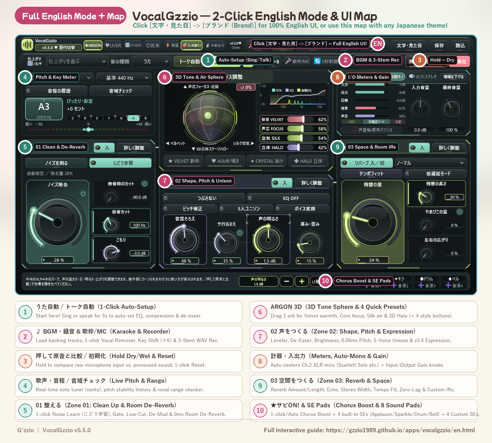

VocalGzzio 5.5.0 · Windows + macOS · Standalone App + VST3 / AU · Built-In 100% English UI
Driverless Karaoke Capture, Chord-Follow Harmony & 1-Click SNS Video.
Ultra-Light. Mini-Bar Ready. Zero Lag.
No DAW and no acoustic booth required. Everything you need for VTuber karaoke streams (OBS / Twitch / YouTube), cover recordings, SNS video posts, and VRChat / Discord voice chat in a single self-contained studio.
Featuring 🌐 App-Specific Karaoke Capture, ⚡ 1-Click Auto Sync (±300ms), 🎹 Chord-Following Smart Harmony, 🎬 1-Click .mp4 Visualizer Export, ⚡ Smart Sleep Ultra-Light DSP, 📌 520×115 Streaming Mini-Bar, ⌨️ Background Global Hotkeys, 🎧 Bone-Conduction Cue Monitor, 🕳️ Spectral Unmasker, and 🎯 0.08ms Pitch Correction.
🎧 Hear the Difference in 34 Seconds (English Vocal Before vs. After)
Press play below to compare: Test 1 (Raw bedroom mic → 0ms Room De-Reverb + Dolby-A Air + Plate Reverb), Test 2 (Buried vocal → Spectral Unmasker -5dB Pocket + 5-Voice Unison), and Test 3 (1-Click Singing Reverb ↔ Dry Talk/MC toggle in 25ms):

Why Streamers, VTubers & Vocalists Switch to VocalGzzio
🌐 App Karaoke Capture, 🎹 Chord Harmony & 🎬 SNS Video (v5.5)
Capture Chrome/YouTube karaoke directly without virtual drivers or local headphone flanging, auto-calibrate mic ↔ BGM sync in 1 click (±300 ms), snap harmonies cleanly to live backing chords ([C], [Fm], [E7]), and export 16:9 / 9:16 H.264 .mp4 visualizer videos (with Dry→Wet comparison) in 1 click—plus Smart Sleep (-40~70% CPU/UI), 520×115 Mini-Bar, and Hold F9 Cough Mute.
〰️ Vocal Expression & 🌉 Mix-Voice Bridge (v5.4)
Natural Tail Vibrato adds a warm 5.5Hz shimmer only to sustained notes (>180ms). Vowel Formant EQ stops tight "ee/eh" vowels from sounding thin or shrill by balancing chest and nasal resonance in real time, while Mix-Voice Bridge synthesizes missing harmonics across register breaks.
🪶 Whisper Lifter, 🎯 Sweet Spot & 🎧 Cue Monitor (v5.3)
Upward Whisper Lifter raises quiet details up to +4.5dB without squashing loud peaks, while Dolby-A Air adds silky 4-band sheen only on voiced vowels. Bone-Conduction Cue Monitor subtracts 240Hz skull resonance in your headphones without altering your OBS/WAV output.
🕳️ Spectral Unmasker, 🏠 Room De-Reverb & 🎯 0.08ms Pitch
Spectral Unmasker carves a -5.0 dB pocket in the center (Mid) of the backing track while you sing. Combine it with 0.0ms Room De-Reverb, 0.08ms Pitch Correction, 1s Auto-Key & BPM Sync, 1-Click Vocal Remover, and 3-Stem WAV Export (-14 LUFS Master + Wet + Dry).
🔗 Zero-Latency OBS & Voice Chat Integration Policy
To ensure full compatibility with the latest Windows 11 kernel protections and signature verification, bundling of a proprietary virtual driver has been postponed to a future roadmap release; currently we guide users through rock-solid zero-latency integration via:
- 1. OBS Native VST3 Direct Filter (Easiest — No Virtual Driver Needed): Load
VocalGzzio.vst3directly inside OBS Studio (Mic/Aux → Filters → + → VST 2.x/3.x Plug-in). - 2. Built-in Audio Interface Loopback: Route Standalone audio + BGM + SE Pads cleanly via hardware loopback on YAMAHA AG03/AG06, Steinberg UR22C/IXO, MOTU M2/M4, Focusrite, etc.
- 3. External Virtual Audio Cable Bridge: VocalGzzio Standalone automatically detects and bridges to established external virtual cables such as
VB-CABLEorYamaha SYNCROOM Driverfor Discord, VRChat, cluster, and OBS.
📚 Technical Guides & Developer Notes (English)
🎤 OBS & VRChat Karaoke Stream Setup Guide
How to get 0.08ms pitch correction, auto-key sync, and spectral unmasking on a single screen without a DAW.
🔧 Fixing the Yamaha AG03 / AG06 "BZZZZ" Buzz Bug
Why the Yamaha AG03/AG06 and Steinberg USB Driver suddenly blast a loud buzzing noise—4 root causes and how to fix them.
🕰️ Dev Note: The 0.08s Touch-Knob Drift & Time Machine
Why lifting your finger off a tablet screen shifts a knob in the final 80ms—and how we keep 14 UI generations in one binary with zero idle CPU load.
⏱️ Dev Note: Fixing the 3.9-Hour Windows WASAPI Crackle & Duplicate Mixer Sliders
Why pairing a USB mic with a separate DAC in Windows WASAPI Shared Mode wedges stock ring buffers after 3.9 hours (+2.2 ppm drift).
Free Trial ($0) vs. Full Version (One-Time Purchase)
| Feature | Free Trial ($0) | Full Version (¥2,500 JPY / ~$17–$19 USD) |
|---|---|---|
| Smart Sleep DSP, Mini-Bar, ±300ms Sync, Global Hotkeys & 19 Themes | Included | Included (Unrestricted) |
| Vocal Expression (v5.4), Cue Monitor (v5.3), Spectral Unmasker, Vocal Remover & 3-Stem WAV Export | Included | Included (Unrestricted) |
| Continuous Audio Output | Brief 0.6s volume dip once every 60 seconds | No volume dips (Ready for live streams & recording) |
| Save Settings, Noise Profile & Setlists on Exit | Resets on app close | Auto-saves everything (Ready in 0 seconds on launch) + A/B Compare |
| Commercial Use & OS License | For hardware/voice testing only | Full commercial rights (monetized YouTube/Twitch streams, covers, no credit required). Includes both Windows & macOS builds (up to 3 devices, free updates). |
📖 Built-In 100% English UI Mode & 10-Second Visual Map
💡 Built-in 100% Full English UI Mode (2 Clicks!): Click 文字・見た目 (Text & Look, top-right bar) and select ブランド (Brand Mode). Every button, knob label, Mini-Bar control, 60 presets, and hover tooltip switches to 100% English!

Compatible with 60+ Brands & 160+ Audio Interfaces, USB Mics & VR Headsets

System Requirements & How to Purchase from Overseas
- Windows 10 / 11 (64-bit): Every ZIP includes the 1-click installer (
VocalGzzio_Setup_v5.5.0.exe/VocalGzzio_Trial_Setup_v5.5.0.exe) plus portable folders for the Standalone App andVST3Plugin (zero extra VC++ runtime DLLs needed). - macOS 11 or later (Apple Silicon M1/M2/M3/M4 & Intel Universal): Includes Standalone App,
VST3, andAU (Audio Unit)installer package (.pkg). - Easy International Checkout on BOOTH: BOOTH supports PayPal, Rakuten Pay, and major international credit/debit cards. Both Windows and macOS versions are included in a single purchase.